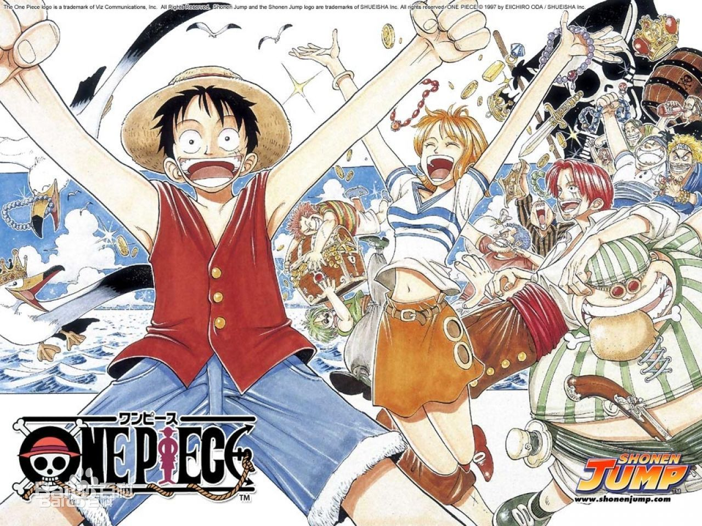

故事介绍
拥有财富、名声、权力，这世界上的一切的男人 “海贼王”哥尔·D·罗杰，在被行刑受死之前说了一句话，让全世界的人都涌向了大海。“想要我的宝藏吗？如果想要的话，那就到海上去找吧，我全部都放在那里。”，世界开始迎接“大海贼时代”的来临。
时值“大海贼时代”，为了寻找传说中海贼王罗杰所留下的大秘宝“ONE PIECE”，无数海贼扬起旗帜，互相争斗。一个叫路飞的少年为了与因救他而断臂的香克斯的约定而出海，在旅途中不断寻找志同道合的伙伴，开始了以成为海贼王为目标的伟大冒险旅程。